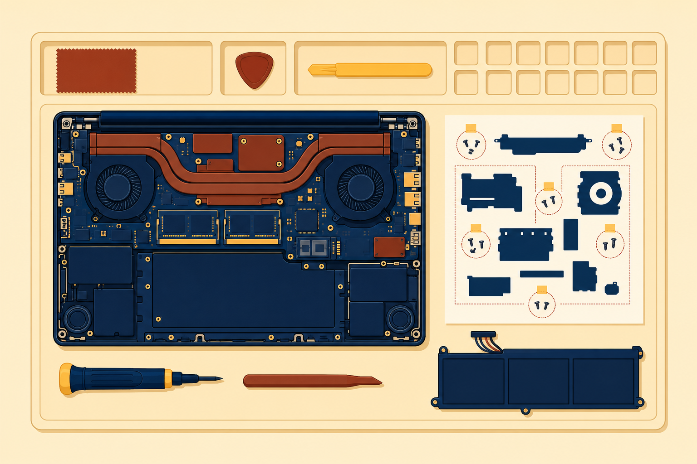

01
Set up
mobile devices, their radios, and the peripherals around them.
Phones, tablets, and laptops: setting them up, syncing their data, and repairing them when the field breaks them.
Start here: Count the radios in your pocket right now. How many can you name?
mobile devices, their radios, and the peripherals around them.
apps, accounts, sync, corporate mail, and device management.
laptop hardware swaps and the failures mobile devices bring in.
One new phone rides the whole class. Four legs stand between the box and the field, and every section checks one off.
Gold follows this phone all class.
Also on the accessory list:
Remember the digitizer. It comes back in lesson 9.4.
Wired connection methods:
Which radios go quiet depends on the device and model. Each radio also has its own switch: hardware, Fn key, or Settings.
Drawn to one scale. LTE fills three percent of the 5G bar. 3G barely registers.
With a partner: You are in a remote location. The laptop needs the phone’s cellular connection, and no cable is on hand. Which setting do you enable?
The phone scans and finds the headset.
You approve the connection on the device.
Audio now flows over the wireless link.
Bluetooth and Wi-Fi share the 2.4 GHz band. Bluetooth hops frequencies, which can interfere with some Wi-Fi channels.
Each app asks permission for:
The protocols live in lesson 7.1: SMTP sends, IMAP and POP3 receive.
With a partner: The phone carries customer data and it is gone. Which management layer can erase it from here?

M.2 2280 reads as 22 mm wide, 80 mm long. Keyboards, cameras, and biometric parts may demand full disassembly and bezel removal.
Intelligent charge monitoring regulates voltage. Charging a half-full battery over and over shortens its life.
Screen and touch
Case and ports
The antenna wraps the screen: seat its connectors firmly, suspect interference, and test the connection. Protectors and cases can dull touch.
With a partner: One phone shows all three symptoms. Name your prime suspect.
Name the radios airplane mode can silence.
Which protocol sends mail? Which two receive it?
The screen works but ignores touch. Which layer failed?
Next step: Run the CertMaster labs: Manage Mobile Devices, then Configure a Laptop Dock and External Peripherals, then the challenge lab Mobile Hardware Support. Chapter 10 turns to print devices.